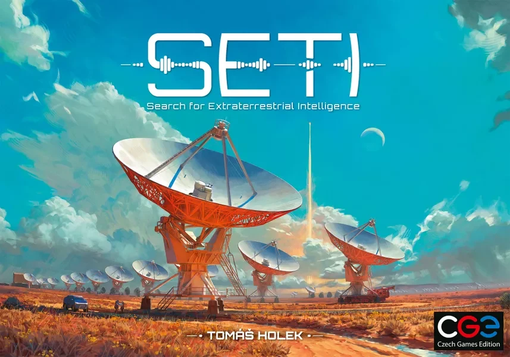

Configuração da Missão Solo
Nível de Dificuldade
Módulo de Expansão
Primeiro Jogador
Checklist de Montagem da Mesa Física
- Prepare o tabuleiro para 2 jogadores. Entregue todas as peças de uma cor ao Rival.
- Coloque o marcador de progresso do Rival na posição inicial de sua trilha.
- Ambos os jogadores iniciam com 4 de Publicidade. O 1º jogador começa com 1 PV e o 2º com 2 PV.
- Coloque as tecnologias preferidas do Rival correspondentes ao tabuleiro da dificuldade.
- Deixe as cartas de ação do Rival e tiles de objetivos ao lado (o app cuidará dos sorteios).
Ordem de Operações do Rival
S.01
←
ESQUERDA
Telemetria do Rival
PV: 2
PUB: 4
Trilha de Tecnologia (12)
Azul 1
Avançar:
Computador do Rival (Dados)
0 / 6
● 2º Dado: +1 Pub
● 4º Dado: +4 Progresso
Objetivos Solo Ativos
Log de Escuta do Observatório
[00:00] Telemetria inicializada. Pronto para o 1º turno.